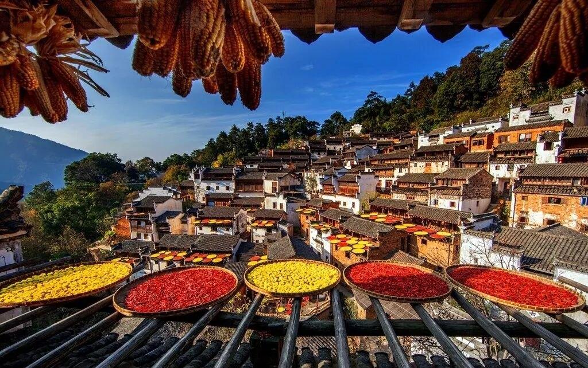
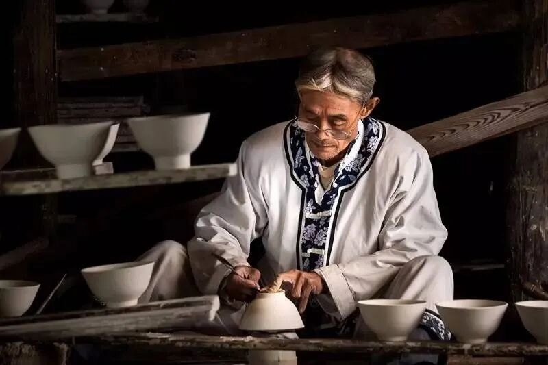
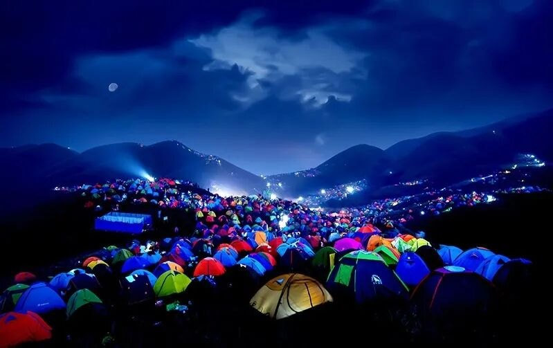
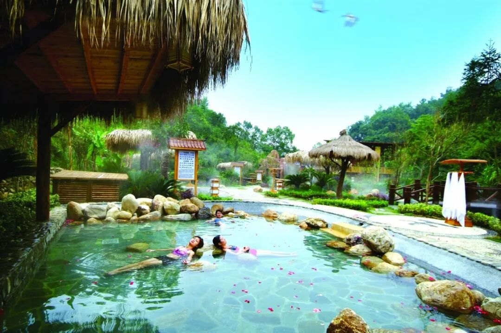
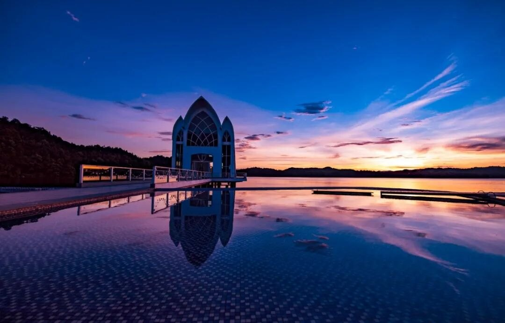

|
||||||
为什么一定要来江西 爱上一个人可能没有理由， 但想去一个地方旅行，肯定是有理由的。 也许你会为了一个景点去旅行， 也许你会为了品尝美食去旅行…… 下面来告诉你到江西旅游的十大理由， 你不能不知道！
01 登高滕王阁，穿越时空遇见历史 登上滕王阁，欣赏的不仅是风景，更是文化，与王勃、苏东坡、王安石、汤显祖等各朝代圣贤和英雄豪杰来一次跨越千年的时空对话。
02 去庐山过个悠然假期 带上闲适之心，在庐山过个悠然假期，赏景色，庐山“奇秀甲天下”；品文化，庐山有“半部中国文化史”的积淀；涤心灵，庐山“一山藏六教”；迷地质，庐山是寻迹万年前冰川运动的天堂。
03 循迹婺源，迷失在梦乡里  我要去江西，就是因为宛如梦境的婺源。漫步于古旧的石板路上，一排排粉墙黛瓦的徽派民居，一幢幢保持着市井烟火气的民宿客栈，让人每走一步，都会沉醉其中，仿佛遁入了一个古老而幽静的梦乡。
04 去龙虎山看千年未解的升棺表演 乘坐竹筏至龙虎山桃花州仙水岩，看一场心心念念很久的升棺表演，欣赏千年未解的古越人丧葬仪式，思索古人是怎样把这些棺木放上去的？
05 带着孩子去景德镇当回烧窑匠  景德镇是瓷器的代名词，其英文“China”与“中国”同名。带着孩子游学于这座千年窑火不熄的瓷都圣地，当然还要去中国陶瓷艺术博物馆，探寻陶瓷的前世今生，细细品味流传千年的瓷器故事。
06 去鄱阳湖，把“鸟的天堂”装进镜头 喜欢摄影，便是我选择鄱阳湖的最大理由，它是誉满天的国际观鸟胜地。每年11月底至次年2月底，几十万只候鸟停落鄱阳湖。把它们装进镜头，创作出各种大片……
07 追星空，醉美在江西美妙夜  我要去江西，只想躺进江西璀璨的星空里，在武功山的高山草甸上撑起帐篷，看满天繁星，在星空下入眠；而夜宿中国第五个“中华暗夜星空保护地”——横峰葛源的星空，又是另一番风味，古树炊烟、花海稻田，可以数着繁星进入良辰美梦。
08 在山水间，感悟江西的温度  “华夏第一硒泉”明月山温汤是江西当之无愧的网红温泉；去藏在世外桃源中的铜鼓汤里泡温泉；沐浴庐山“富氡温泉”，浑身轻盈，一解“忧劳积虑”；而在樟树古海温泉可以“漂着泡”，让人在漂浮中快乐养生。
09 有一种浪漫，叫去江西谈恋爱  与ta泛舟仙女湖上，在爱情岛见证最美爱情，再去明月山摸一摸月老石，许个愿，系上寓意“千里姻缘一线牵”的红绳；回到都市，一定要坐“南昌之星”摩天轮，在斑斓夜色中幻想就这么一直坐到天荒地老。
10 当个真正的“赣”饭人
作为一名干饭人，专治各种水土不服。大名鼎鼎的南昌瓦罐汤，汤头鲜甜清澈，特别解馋。
有“文人菜”之称的赣菜风味自成一派，我的“赣”饭菜单第一位必须是江西拌粉，像宁都三杯鸡、莲花血鸭、井冈烟笋、白浇雄鱼头、甲鱼粉皮、滋补泰和乌鸡等皆是乡土味极浓的赣菜。当然，在吃辣这件事上，江西人也没输给湘川鄂，酒糟鱼、牛杂、庐山石鸡那真是又辣又开胃。
|
||||||
© 2025 魏云紫君版权所有 联系我们：2623411238@qq.com 电话：18870071925 |
||||||